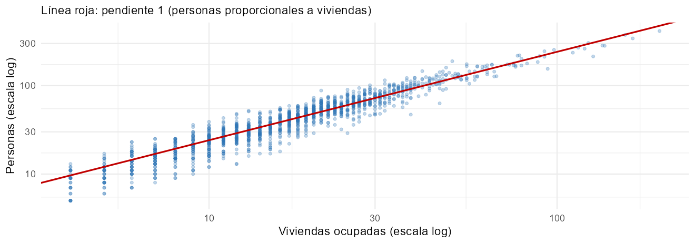
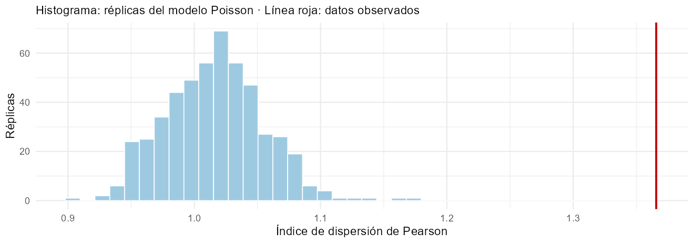
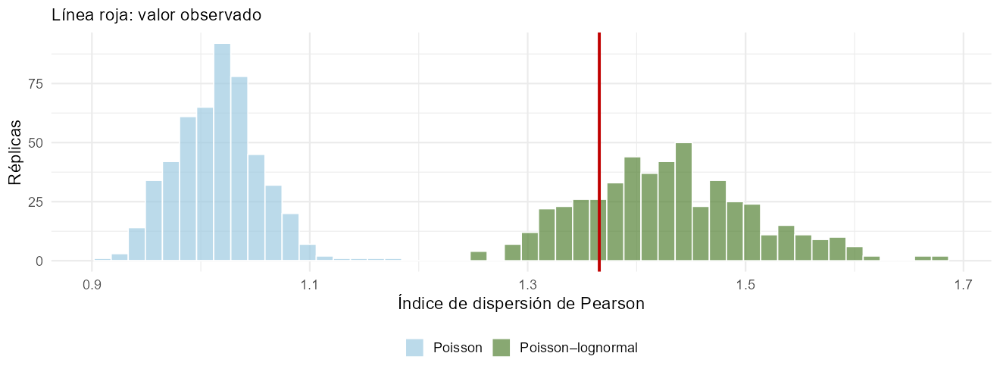
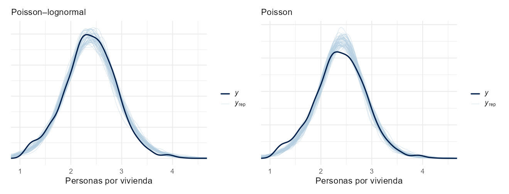
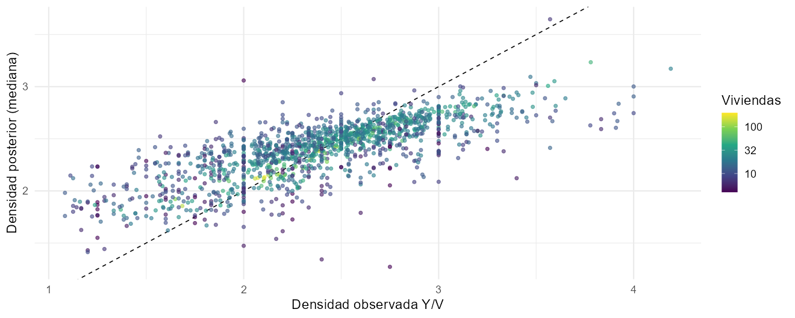

Modelo Poisson con vínculo loglineal
CEPAL · UNFPA América Latina y el Caribe · INE Chile
Invalid Date
D2S1 y D2S2 modelaron log(personas por vivienda). Ahora modelamos el conteo de personas, incorporando las viviendas como exposición.
En la sesión anterior se modeló \(\log(Y_i / V_i)\) como una variable continua. Dos problemas:
Un modelo lineal generalizado (GLM) modela directamente la distribución del conteo (McCullagh y Nelder 1989). Tiene tres componentes:
| Componente | En el modelo Poisson |
|---|---|
| Distribución de la respuesta | \(Y_i \sim \text{Poisson}(\lambda_i)\) |
| Predictor lineal | \(\eta_i = \mathbf{x}_i^\top\boldsymbol\beta\) |
| Función de vínculo | \(\log\lambda_i = \log V_i + \eta_i\) |
\[ p(y \mid \lambda) = \frac{\lambda^y e^{-\lambda}}{y!}, \qquad y = 0, 1, 2, \dots \]
Con \(\log\lambda_i = \log V_i + \mathbf{x}_i^\top\boldsymbol\beta\):
\[ \lambda_i = V_i \times \underbrace{e^{\mathbf{x}_i^\top\boldsymbol\beta}}_{\delta_i} \qquad\Longrightarrow\qquad E\!\left(\frac{Y_i}{V_i}\right) = \delta_i. \]
Si se estima libremente, \(\log\lambda_i = \alpha + \gamma\log V_i\), y \(\gamma = 1\) significa que las personas son proporcionales a las viviendas:
ajuste_offset <- glm(n_per ~ log(n_vpo), family = poisson, data = aptos)
ajuste_offset_quasi <- glm(n_per ~ log(n_vpo), family = quasipoisson, data = aptos)
tabla_offset <- bind_rows(Poisson = broom::tidy(ajuste_offset),
quasiPoisson = broom::tidy(ajuste_offset_quasi), .id = "model") %>%
select(model, term, estimate, std.error)
tabla_offset| model | term | estimate | std.error |
|---|---|---|---|
| Poisson | (Intercept) | 0,8697 | 0,0176 |
| Poisson | log(n_vpo) | 1,0035 | 0,0053 |
| quasiPoisson | (Intercept) | 0,8697 | 0,0237 |
| quasiPoisson | log(n_vpo) | 1,0035 | 0,0071 |

La pendiente es una exploración agregada sin todas las covariables. Se muestran errores estándar Poisson y cuasi-Poisson; la sobredispersión puede alterar su precisión. Su cercanía a 1 no prueba proporcionalidad condicional: el offset también expresa un supuesto sustantivo sobre personas por vivienda.
Con \(\mu_i = V_i e^{\mathbf{x}_i^\top\boldsymbol\beta}\):
\[ \ell(\boldsymbol\beta) = \log p(\mathbf{y} \mid \boldsymbol\beta) = \sum_{i=1}^n \Big[y_i\big(\log V_i + \mathbf{x}_i^\top\boldsymbol\beta\big) - V_i e^{\mathbf{x}_i^\top\boldsymbol\beta} - \log y_i!\Big]. \]
Derivando:
\[ \frac{\partial\ell}{\partial\boldsymbol\beta} = \sum_{i=1}^n \mathbf{x}_i\,(y_i - \mu_i) = \mathbf{X}^\top(\mathbf{y} - \boldsymbol\mu), \qquad \frac{\partial^2\ell}{\partial\boldsymbol\beta\,\partial\boldsymbol\beta^\top} = -\mathbf{X}^\top\mathbf{W}\mathbf{X}, \quad \mathbf{W} = \text{diag}(\mu_i). \]
El máximo no tiene solución cerrada. glm() usa Newton–Raphson, que para el vínculo canónico es mínimos cuadrados iterativamente reponderados (IRLS):
\[ \boldsymbol\beta^{(t+1)} = \big(\mathbf{X}^\top\mathbf{W}^{(t)}\mathbf{X}\big)^{-1}\mathbf{X}^\top\mathbf{W}^{(t)}\mathbf{z}^{(t)}, \qquad z_i^{(t)} = \mathbf{x}_i^\top\boldsymbol\beta^{(t)} + \frac{y_i - \mu_i^{(t)}}{\mu_i^{(t)}}. \]
Cada paso es una regresión ponderada de una respuesta “linealizada” con pesos \(\mu_i\). En el enfoque bayesiano, con previas \(\beta_k \sim N(0, 1)\), una aproximación local de Laplace tiene centro en la moda posterior y covarianza \((\mathbf{X}^\top\mathbf{W}\mathbf{X} + \mathbf{I})^{-1}\), con \(\mathbf W\) evaluada allí. La cercanía a máxima verosimilitud depende de la información y de la previa.
Se utiliza el indicador operativo apto_modelo, heredado de la preparación. La selección basada en información observada y la extrapolación a no aptos requieren evaluación; la verosimilitud de esta sesión no modela explícitamente ese mecanismo de selección.
covariables <- grep("_std$", names(segmentos), value = TRUE)
construir_X <- function(datos) {
cbind(intercepto = 1,
zona_urbana = as.numeric(datos$zona == "urbana"),
zona_aldea = as.numeric(datos$zona == "aldea"),
as.matrix(datos[, covariables]))
}
X <- construir_X(aptos)
stopifnot(all(is.finite(X)), nrow(X) > ncol(X), qr(X)$rank == ncol(X))
ajuste_glm <- glm(aptos$n_per ~ X - 1 + offset(log(aptos$n_vpo)), family = poisson)
dispersion_glm <- sum(residuals(ajuste_glm, type = "pearson")^2) / ajuste_glm$df.residual
dispersion_glm// Regresion Poisson con offset: Y_i ~ Poisson(V_i * delta_i), log(delta_i) = x_i' beta
data {
int<lower=1> n;
int<lower=1> p;
matrix[n, p] X;
array[n] int<lower=0> y; // personas
vector[n] log_v; // log(viviendas ocupadas): offset
}
parameters {
vector[p] beta;
}
model {
beta ~ normal(0, 1);
y ~ poisson_log(log_v + X * beta); // log(lambda_i) = log(V_i) + x_i' beta
}
generated quantities {
array[n] int y_rep;
int<lower=0> rng_out_of_range = 0;
vector[n] log_lik;
for (i in 1:n) {
real log_lambda = log_v[i] + X[i] * beta;
if (log_lambda >= 30 * log(2)) {
y_rep[i] = -1; // invalid simulation marker, never a population count
rng_out_of_range += 1;
} else {
y_rep[i] = poisson_log_rng(log_lambda);
}
log_lik[i] = poisson_log_lpmf(y[i] | log_lambda);
}
}poisson_log(eta) es la Poisson parametrizada en \(\log\lambda\): más estable que poisson(exp(eta)).log_v se calcula en R y entra como dato.log_lik guarda la log-verosimilitud de cada segmento para LOO.poisson_log_rng requiere log-tasa menor que \(30\log 2\). No se recorta la tasa: se registra rng_out_of_range y se marca la réplica inválida con -1. El script exige cero casos inválidos en los draws retenidos antes de usar las réplicas.modelo_poisson <- stan_model("stan/poisson_offset.stan")
datos_stan <- list(n = nrow(X), p = ncol(X), X = X,
y = aptos$n_per, log_v = log(aptos$n_vpo))
set.seed(303)
init_poisson <- lapply(seq_len(4), function(chain) {
list(beta = unname(coef(ajuste_glm) + rnorm(ncol(X), 0, 0.5 * sqrt(diag(vcov(ajuste_glm))))))
})
fit_poisson <- sampling(modelo_poisson, data = datos_stan, init = init_poisson,
chains = 4, iter = 2000, warmup = 1000, seed = 301, refresh = 0,
control = list(metric = "dense_e", adapt_delta = 0.95, max_treedepth = 12))
saveRDS(fit_poisson, "resultados/fit_poisson.rds")resultado_poisson <- summarise_draws(as_draws_array(as.array(fit_poisson, pars = "beta")),
"mean", "sd", "rhat", "ess_bulk", "ess_tail", "mcse_mean") %>%
filter(str_starts(variable, "beta")) %>%
mutate(termino = str_remove(colnames(X), "_std$"), glm = coef(ajuste_glm),
error_glm = sqrt(diag(vcov(ajuste_glm))), .after = variable)
resultado_poissonLos inicios se sitúan cerca del GLM, con valores distintos entre cadenas, y el Poisson usa una métrica densa para la correlación de coeficientes. Esto facilita la exploración; no sustituye su verificación.
glm()| termino | glm | error_glm | mean | sd |
|---|---|---|---|---|
| intercepto | 0,890 | 0,041 | 0,889 | 0,040 |
| zona_urbana | -0,040 | 0,047 | -0,039 | 0,046 |
| zona_aldea | -0,120 | 0,049 | -0,118 | 0,048 |
| nlav_mean | -0,057 | 0,016 | -0,057 | 0,017 |
| dyn_world_urb_mean | 0,044 | 0,020 | 0,043 | 0,019 |
| lu_pct_artif_urban | 0,005 | 0,008 | 0,005 | 0,008 |
| building_fractional_count_sum | -0,001 | 0,003 | -0,001 | 0,003 |
| ine_opb_count | 0,013 | 0,004 | 0,013 | 0,004 |
| ine_opb_area_ratio | 0,019 | 0,007 | 0,020 | 0,007 |
| ine_opb_nnd_mean | 0,003 | 0,013 | 0,003 | 0,013 |
| dens_len_allroads | 0,073 | 0,008 | 0,073 | 0,008 |
| dist_closest_school_m | -0,027 | 0,007 | -0,027 | 0,007 |
| mean_slope | 0,013 | 0,004 | 0,013 | 0,004 |
Compare las medias y desviaciones posteriores con los estimadores y errores estándar GLM. Las diferencias pueden deberse a la regularización y al error Monte Carlo; la cercanía no valida por sí sola el muestreo ni el modelo.
Si los datos son Poisson, \(\text{Var}(Y_i) = E(Y_i)\) y los residuos de Pearson
\[ r_i = \frac{y_i - \hat\mu_i}{\sqrt{\hat\mu_i}} \]
tienen varianza cercana a 1. El índice de dispersión
\[ \hat\phi = \frac{1}{n - p}\sum_{i=1}^n r_i^2 \]
debe ser cercano a 1. Para glm() en Aysén: \(\hat\phi =\) 1,37.
dispersion <- function(y, mu) sum((y - mu)^2 / mu) / (length(y) - ncol(X))
mu_hat <- colMeans(exp(as.matrix(fit_poisson, pars = "beta") %*% t(X))) * aptos$n_vpo
y_rep <- as.matrix(fit_poisson, pars = "y_rep")
stopifnot(all(as.matrix(fit_poisson, pars = "rng_out_of_range") == 0), all(y_rep >= 0))
set.seed(1)
phi_rep <- apply(y_rep[sample(nrow(y_rep), 500), ], 1, dispersion, mu = mu_hat)
phi_obs <- dispersion(aptos$n_per, mu_hat)
La dispersión observada es 1,37; el 95% de las réplicas Poisson queda bajo 1,08.
Soluciones habituales:
Si \(Y_i \mid u_i \sim \text{Poisson}(\mu_i u_i)\) con \(u_i \sim \text{Gamma}(\phi, \phi)\) (\(E(u_i) = 1\), \(\text{Var}(u_i) = 1/\phi\)):
\[ p(y_i) = \int_0^\infty \frac{(\mu_i u)^{y_i}e^{-\mu_i u}}{y_i!}\frac{\phi^\phi}{\Gamma(\phi)}u^{\phi - 1}e^{-\phi u}\,du = \frac{\Gamma(y_i + \phi)}{y_i!\,\Gamma(\phi)}\Big(\frac{\phi}{\phi + \mu_i}\Big)^{\phi}\Big(\frac{\mu_i}{\phi + \mu_i}\Big)^{y_i}, \]
con
\[ E(Y_i) = \mu_i, \qquad \text{Var}(Y_i) = \mu_i + \frac{\mu_i^2}{\phi}. \]
El término \(\mu_i^2/\phi\) es la sobredispersión; con \(\phi \to \infty\) se recupera la Poisson. Comparte la forma algebraica de la predictiva del día 1, pero cambia la interpretación: aquí cada segmento tiene un efecto Gamma propio; antes se integraba la incertidumbre de una tasa común.
\[ Y_i \mid \delta_i \sim \text{Poisson}(V_i\,\delta_i), \qquad \log\delta_i = \mathbf{x}_i^\top\boldsymbol\beta + \varepsilon_i, \qquad \varepsilon_i \sim N(0, \sigma^2). \]
Con \(\eta_i = \mathbf{x}_i^\top\boldsymbol\beta\) y \(E(e^{\varepsilon_i}) = e^{\sigma^2/2}\), \(E(e^{2\varepsilon_i}) = e^{2\sigma^2}\):
\[ E(Y_i) = E\big[E(Y_i \mid \delta_i)\big] = V_i\,E(\delta_i) = V_i\,e^{\eta_i + \sigma^2/2}, \]
\[ \text{Var}(Y_i) = E\big[\text{Var}(Y_i \mid \delta_i)\big] + \text{Var}\big[E(Y_i \mid \delta_i)\big] = E(Y_i) + V_i^2 e^{2\eta_i}\big(e^{2\sigma^2} - e^{\sigma^2}\big), \]
es decir,
\[ \text{Var}(Y_i) = E(Y_i) + E(Y_i)^2\big(e^{\sigma^2} - 1\big). \]
La misma forma que la Binomial negativa, con \(1/\phi = e^{\sigma^2} - 1\): la varianza extra crece con el cuadrado de la media. Con \(\sigma = 0{,}1\), \(e^{\sigma^2} - 1 \approx 0{,}01\): en un segmento de 250 personas, la desviación pasa de 16 (Poisson) a 30.
Dos formas equivalentes de escribir el mismo modelo:
Centrada
\[ \log\delta_i \sim N(\mathbf{x}_i^\top\boldsymbol\beta, \sigma^2) \]
el parámetro es \(\log\delta_i\).
No centrada
\[ z_i \sim N(0, 1), \quad \log\delta_i = \mathbf{x}_i^\top\boldsymbol\beta + \sigma z_i \]
el parámetro es \(z_i\).
// Poisson-lognormal: un efecto aleatorio por segmento captura la sobredispersion
// Y_i ~ Poisson(V_i * delta_i), log(delta_i) = x_i' beta + sigma * z_i, z_i ~ N(0, 1)
data {
int<lower=1> n;
int<lower=1> p;
matrix[n, p] X;
array[n] int<lower=0> y;
vector[n] log_v;
}
parameters {
vector[p] beta;
real<lower=0> sigma; // variabilidad de log(delta) entre segmentos
vector[n] z; // efecto estandarizado de cada segmento
}
transformed parameters {
vector[n] log_delta = X * beta + sigma * z;
}
model {
beta ~ normal(0, 1);
sigma ~ cauchy(0, 2.5);
z ~ std_normal();
y ~ poisson_log(log_v + log_delta);
}
generated quantities {
// Mixed replication: new latent density at each observed design/exposure.
array[n] int y_rep;
int<lower=0> rng_out_of_range = 0;
for (i in 1:n) {
real log_lambda = log_v[i] + X[i] * beta + sigma * normal_rng(0, 1);
if (log_lambda >= 30 * log(2)) {
y_rep[i] = -1;
rng_out_of_range += 1;
} else {
y_rep[i] = poisson_log_rng(log_lambda);
}
}
}modelo_pln <- stan_model("stan/poisson_lognormal.stan")
set.seed(304)
initial_lm <- lm(log(aptos$n_per / aptos$n_vpo) ~ X - 1)
initial_beta <- unname(coef(initial_lm))
initial_scales <- c(0.08, 0.10, 0.12, 0.15)
init_pln <- lapply(seq_len(4), function(chain) {
beta <- initial_beta + rnorm(ncol(X), 0, 0.1 * sqrt(diag(vcov(initial_lm))))
sigma <- initial_scales[chain]
z <- drop((log(aptos$n_per / aptos$n_vpo) - X %*% beta) / sigma)
list(beta = beta, sigma = sigma, z = z + rnorm(nrow(X), 0, 0.05))
})
fit_pln <- sampling(modelo_pln, data = datos_stan, init = init_pln,
chains = 4, iter = 2000, warmup = 1000, seed = 302, refresh = 0,
control = list(adapt_delta = 0.95, max_treedepth = 12),
pars = c("beta", "sigma", "z", "log_delta", "y_rep", "rng_out_of_range"))
saveRDS(fit_pln, "resultados/fit_pln.rds")sampler_pln <- rstan::get_sampler_params(fit_pln, inc_warmup = FALSE)
diagnostico_pln <- tibble(
divergencias = sum(vapply(sampler_pln, function(x) sum(x[, "divergent__"]), numeric(1))),
max_treedepth = sum(vapply(sampler_pln, function(x) sum(x[, "treedepth__"] >= 12), numeric(1))))
resumen_pln <- summarise_draws(as_draws_array(as.array(fit_pln, pars = c("beta", "sigma"))),
"mean", "sd", "rhat", "ess_bulk", "ess_tail", "mcse_mean") %>%
filter(variable == "sigma" | str_starts(variable, "beta\\[[1-3]\\]"))
diagnostico_pln
resumen_pln| divergencias | max_treedepth |
|---|---|
| 0 | 0 |
| variable | mean | sd | rhat | ess_bulk | ess_tail | mcse_mean |
|---|---|---|---|---|---|---|
| beta[1] | 0,869 | 0,050 | 1,000 | 2.542 | 2.898 | 0,001 |
| beta[2] | -0,025 | 0,058 | 1,000 | 2.500 | 2.546 | 0,001 |
| beta[3] | -0,105 | 0,061 | 1,000 | 2.601 | 2.559 | 0,001 |
| sigma | 0,089 | 0,006 | 1,002 | 2.034 | 2.531 | 0,000 |
| Modelo | \(\sigma\) | Interpretación |
|---|---|---|
| Regresión lineal de \(\log(Y/V)\) (sesión 1) | 0,195 | variabilidad de \(\log(Y/V)\): densidad + ruido de conteo |
| Poisson–lognormal | 0,089 | heterogeneidad latente de log-densidad bajo el modelo |
La tabla promedia los momentos predictivos de cada segmento, manteniendo su diseño y exposición; no es la varianza de todos los segmentos mezclados como si fueran intercambiables.
# Momentos marginales del Poisson-lognormal: E(Y) = V exp(eta + sigma^2/2),
# Var(Y) = E(Y) + E(Y)^2 (exp(sigma^2) - 1). Se comparan con los de las replicas.
beta_pln <- as.matrix(fit_pln, pars = "beta")
sigma_draws <- as.matrix(fit_pln, pars = "sigma")[, 1]
eta_draws <- beta_pln %*% t(X)
eta_hat <- matrix(colMeans(eta_draws), nrow = 1)
mean_draws <- exp(eta_draws + sigma_draws^2 / 2) *
matrix(aptos$n_vpo, nrow(eta_draws), ncol(eta_draws), byrow = TRUE)
variance_draws <- mean_draws + mean_draws^2 * expm1(sigma_draws^2)
media_teorica <- colMeans(mean_draws)
var_teorica <- colMeans(variance_draws) + apply(mean_draws, 2, var)
y_rep_pln <- as.matrix(fit_pln, pars = "y_rep")
stopifnot(all(as.matrix(fit_pln, pars = "rng_out_of_range") == 0),
all(y_rep_pln >= 0), all(is.finite(var_teorica)))
tabla_momentos <- tibble(
cantidad = c("Media de Y (promedio de segmentos)", "Varianza de Y (promedio)", "Varianza / media"),
teorica = c(mean(media_teorica), mean(var_teorica), mean(var_teorica / media_teorica)),
replicas = c(mean(colMeans(y_rep_pln)), mean(apply(y_rep_pln, 2, var)),
mean(apply(y_rep_pln, 2, var) / colMeans(y_rep_pln))))
tabla_momentos| cantidad | teorica | replicas |
|---|---|---|
| Media de Y (promedio de segmentos) | 50,095 | 50,093 |
| Varianza de Y (promedio) | 83,836 | 83,898 |
| Varianza / media | 1,414 | 1,415 |
La tabla compara las réplicas con momentos predictivos posteriores. Se promedian las medias y varianzas por draw y se añade la varianza de la media entre draws: \(\operatorname{Var}(Y\mid\mathbf y)=E[\operatorname{Var}(Y\mid\beta,\sigma)\mid\mathbf y]+\operatorname{Var}[E(Y\mid\beta,\sigma)\mid\mathbf y]\). No se sustituyen los parámetros por sus medias antes de aplicar las fórmulas.
Ambos modelos se comparan mediante el mismo estadístico de discrepancia, usando como referencia fija las medias del Poisson. No es un índice de dispersión recalibrado específicamente para el Poisson–lognormal.
set.seed(2)
phi_rep_pln <- apply(y_rep_pln[sample(nrow(y_rep_pln), 500), ], 1, dispersion, mu = mu_hat)
grafico_ppc_pln <- bind_rows(tibble(modelo = "Poisson", phi = phi_rep),
tibble(modelo = "Poisson–lognormal", phi = phi_rep_pln)) %>%
ggplot(aes(phi, fill = modelo)) +
geom_histogram(bins = 50, alpha = 0.7, position = "identity", colour = "white") +
geom_vline(xintercept = phi_obs, colour = "#c00000", linewidth = 1.2) +
scale_fill_manual(values = c("#9ecae1", "#548235")) +
labs(x = "Índice de dispersión de Pearson", y = "Réplicas", fill = NULL,
subtitle = "Línea roja: valor observado") +
theme(legend.position = "bottom")
guardar_figura(grafico_ppc_pln, "grafico_ppc_pln", alto = 4.5)
Las réplicas del Poisson–lognormal usan una densidad nueva para cada segmento: simulan segmentos con las mismas covariables y viviendas. Este chequeo es mixto, distinto de replicar los conteos condicionando en las densidades latentes ya aprendidas de cada segmento.
set.seed(1)
idx <- sample(nrow(y_rep_pln), 50)
v <- matrix(aptos$n_vpo, length(idx), nrow(aptos), byrow = TRUE)
grafico_ppc_densidad <- (ppc_dens_overlay(aptos$n_per / aptos$n_vpo, y_rep_pln[idx, ] / v) +
labs(subtitle = "Poisson–lognormal")) +
(ppc_dens_overlay(aptos$n_per / aptos$n_vpo, y_rep[idx, ] / v) + labs(subtitle = "Poisson")) &
coord_cartesian(xlim = c(1, 4.5)) & labs(x = "Personas por vivienda")
guardar_figura(grafico_ppc_densidad, "grafico_ppc_densidad", alto = 4.6)
La figura anterior muestra la ventana de 1 a 4,5 personas por vivienda. La evaluación completa debe revisar también los valores fuera de ese rango y recordar el filtro de elegibilidad de los datos.
La posterior de \(\log\delta_i\) combina su dato con la predicción de las covariables. Aproximando la verosimilitud de \(\log\delta_i\) por una normal con media \(\log(Y_i/V_i)\) y varianza \(1/Y_i\) (método delta, \(Y_i>0\) y suficientemente grande), manteniendo \(\boldsymbol\beta\) y \(\sigma\) fijos:
\[ E(\log\delta_i \mid \mathbf{y},\boldsymbol\beta,\sigma) \approx w_i\log\frac{Y_i}{V_i} + (1 - w_i)\,\mathbf{x}_i^\top\boldsymbol\beta, \qquad w_i = \frac{\sigma^2}{\sigma^2 + 1/Y_i}. \]
ratio_implicito_stan es un cociente descriptivo construido con medias posteriores, no un peso posterior exacto ni necesariamente un valor entre cero y uno. Se omiten denominadores cercanos a cero para evitar inestabilidad.
# Densidad posterior de cada segmento frente a la observada y a la de las covariables.
# Aproximacion: log(Y/V) tiene varianza ~ 1/Y, asi que el peso del dato es
# w_i = sigma^2 / (sigma^2 + 1/Y_i)
log_delta_draws <- as.matrix(fit_pln, pars = "log_delta")
log_delta_post <- colMeans(log_delta_draws)
delta_median <- exp(apply(log_delta_draws, 2, median))
eta_cov <- eta_hat[1, ]
w_aprox <- sigma_pln^2 / (sigma_pln^2 + 1 / aptos$n_per)
w_stan <- (log_delta_post - eta_cov) / (log(aptos$n_per / aptos$n_vpo) - eta_cov)
tabla_encogimiento <- tibble(viviendas = aptos$n_vpo, w_aprox, w_stan) %>%
filter(abs(log(aptos$n_per / aptos$n_vpo) - eta_cov) > 0.05) %>% # evita divisiones inestables
mutate(tamano = cut(viviendas, c(0, 10, 20, 40, Inf), labels = c("1–10", "11–20", "21–40", "más de 40"))) %>%
group_by(tamano) %>%
summarise(segmentos = n(), peso_dato_aprox = median(w_aprox), ratio_implicito_stan = median(w_stan))
tabla_encogimiento| tamano | segmentos | peso_dato_aprox | ratio_implicito_stan |
|---|---|---|---|
| 1<U+2013>10 | 298 | 0,113 | 0,115 |
| 11<U+2013>20 | 430 | 0,212 | 0,216 |
| 21<U+2013>40 | 319 | 0,337 | 0,335 |
| m<U+00E1>s de 40 | 76 | 0,514 | 0,509 |

El gráfico usa la mediana posterior de \(\delta_i\), calculada como exponencial de la mediana de sus draws de log-densidad. Examine cómo se relaciona el alejamiento de la diagonal con la exposición; no todo alejamiento implica el mismo grado de encogimiento.
| model | Rhat_max | ESS_bulk_min | ESS_tail_min | divergences | max_treedepth_hits | invalid_replications |
|---|---|---|---|---|---|---|
| Poisson | 1,001 | 4.299,958 | 2.670,076 | 0 | 0 | 0 |
| Poisson_lognormal | 1,009 | 2.034,033 | 1.931,223 | 0 | 0 | 0 |
Se revisan coeficientes y parámetros latentes. R-hat menor que 1,01 y ESS_bulk/ESS_tail de al menos 400 son guías para cuatro cadenas; complemente con trazas y error Monte Carlo. La profundidad máxima de estas ejecuciones es 12. Las réplicas solo se usan si invalid_replications es cero.
Próxima práctica: comparación con binomial negativa y parametrizaciones. El día 3 comienza con dos sesiones de variables satelitales y continúa con el modelo de Chile. Este modelo, \(Y_i \sim \text{Poisson}(V_i\delta_i)\) con \(\log\delta_i \sim N(\mathbf{x}_i^\top\boldsymbol\beta, \sigma^2)\), es una base didáctica para el modelo de población. Falta predecir en los segmentos no aptos y corregir la exposición por cobertura.
Andrés Gutiérrez · Stalyn Guerrero
Contacto: Andrés Gutiérrez
andres.gutierrez@cepal.org